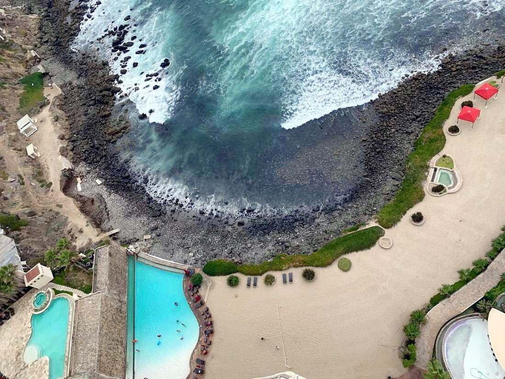
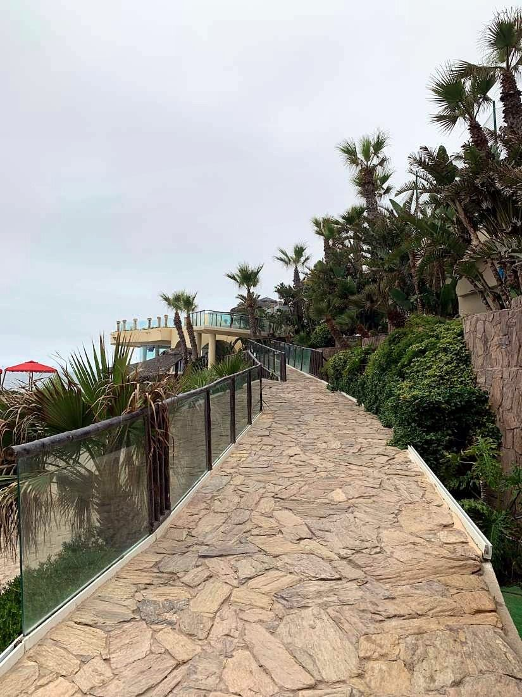
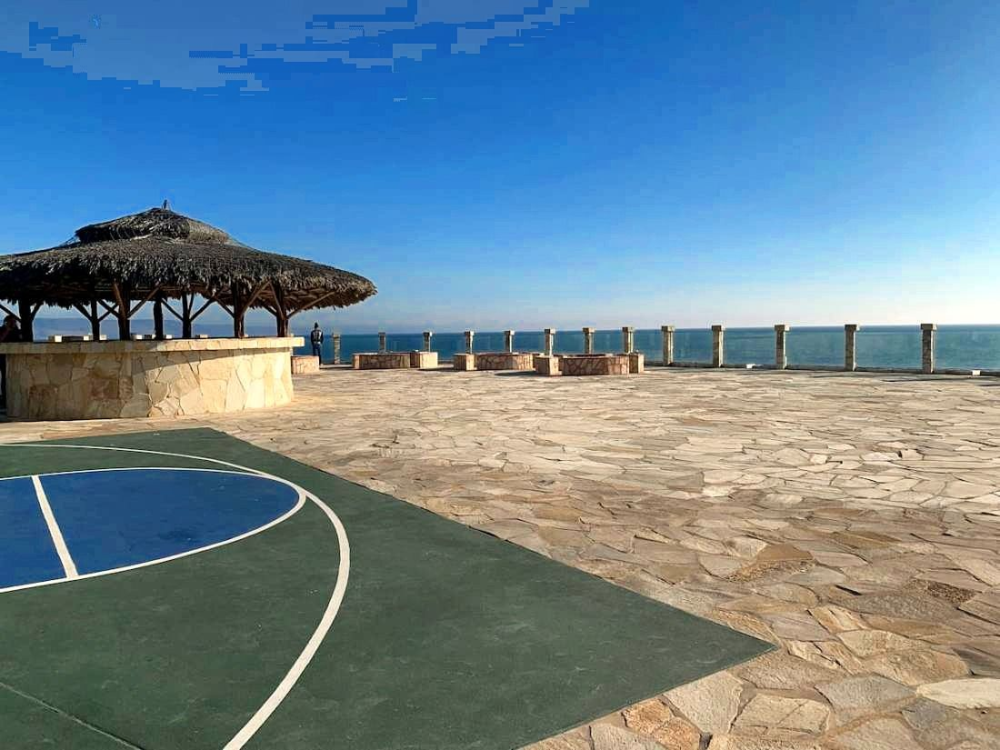
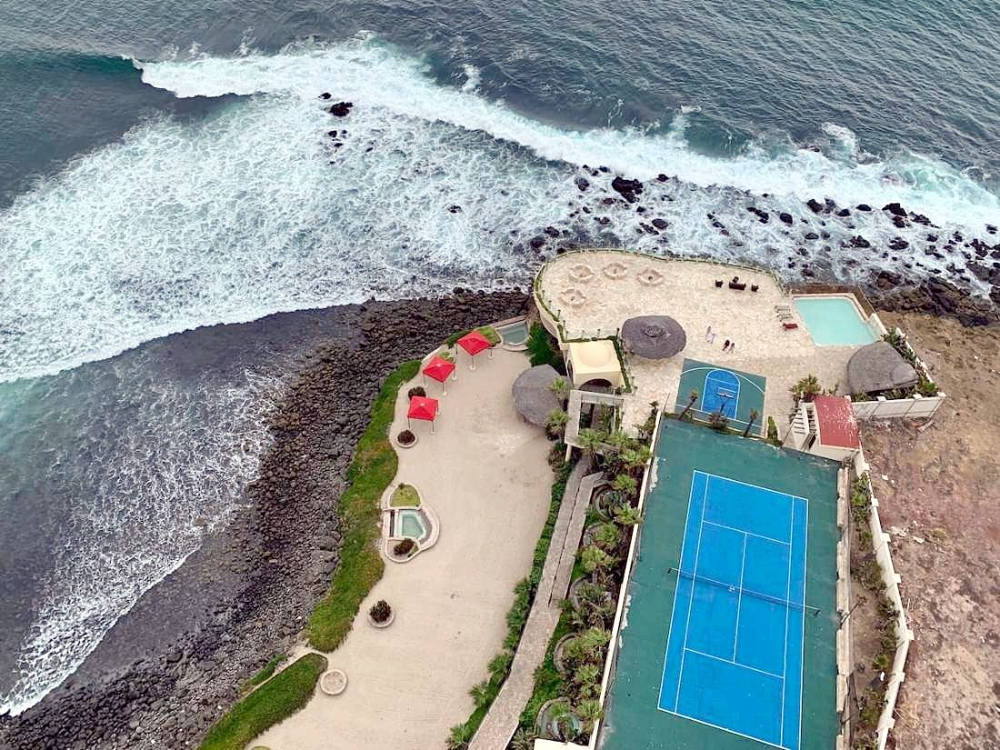

Amenidades
Terraza de alberca frente al mar, cancha de voleibol de arena, canchas deportivas, jacuzzis y senderos en el acantilado, con vistas a toda la costa.
Áreas comunes de Las Olas Grand
Los propietarios tienen acceso completo a las amenidades del edificio, con acceso controlado y caseta de vigilancia.











Amenidades del edificio
- Albercas y jacuzzis con vista al mar
- Gimnasio, sauna y vestidores
- Canchas de voleibol de arena, básquetbol y tenis
- Senderos con jardines en el acantilado y vista al mar
- Acceso controlado con caseta de vigilancia
- Elevadores y estacionamiento de visitas